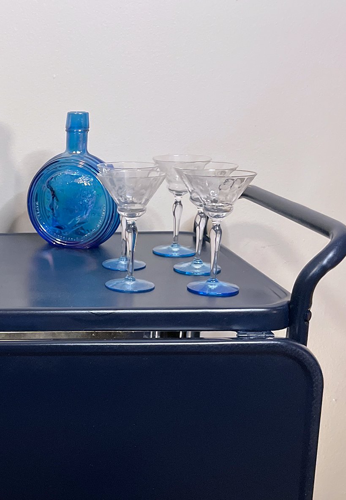

A Minneapolis College of Art and Design, Master of Arts in Graphic and Web Design Capstone Project by Aubrey Hart
A Modern Take on Vintage Resale
Vintage resale has never been more popular, underscored by a 36% increase in secondhand furniture and housewares purchases within the past year. The persisting challenge of time-intensive curation, however, from identifying unique pieces to harmonizing them with other items, poses a significant hurdle for the average shopper in the vintage resale market.
Born from a personal passion for retail, Vignette Collections is a hyper-local eCommerce business specializing in the curation of vintage home decor scenes. Vignette caters to consumers with a desire for sustainable vintage home decor but without the time, interest or know how to curate scenes of their own.
Process
Project Brief
Born from a personal passion for retail, Vignette Collections is a hyper-local eCommerce business specializing in the curation of vintage home decor scenes. Vignette caters to consumers with a desire for sustainable vintage home decor but without the time, interest or know how to curate scenes of their own.
Proof of Concept
Research + User Testing
Today, the vintage resale market has never been more popular in the United States, underscored by a 36% increase in secondhand furniture and housewares purchases within the past year. However, the persisting challenge of time-intensive curation, from identifying unique pieces to harmonizing them with other items, poses a significant hurdle for the average shopper in the vintage resale market.
That’s where Vignette Collections comes in. Vignette Collections is an eCommerce business specializing in the curation of vintage home decor scenes. A fresh take on vintage resale, catered toward consumers with a desire for eclectic home decor but without the time, interest or know how to curate scenes of their own.

Deliverables
That’s where Vignette Collections comes in. Vignette Collections is an eCommerce business specializing in the curation of vintage home decor scenes. A fresh take on vintage resale, catered toward consumers with a desire for eclectic home decor but without the time, interest or know how to curate scenes of their own.
Summary
Today, the vintage resale market has never been more popular in the United States, underscored by a 36% increase in secondhand furniture and housewares purchases within the past year. However, the persisting challenge of time-intensive curation, from identifying unique pieces to harmonizing them with other items, poses a significant hurdle for the average shopper in the vintage resale market.
That’s where Vignette Collections comes in. Vignette Collections is an eCommerce business specializing in the curation of vintage home decor scenes. A fresh take on vintage resale, catered toward consumers with a desire for eclectic home decor but without the time, interest or know how to curate scenes of their own.